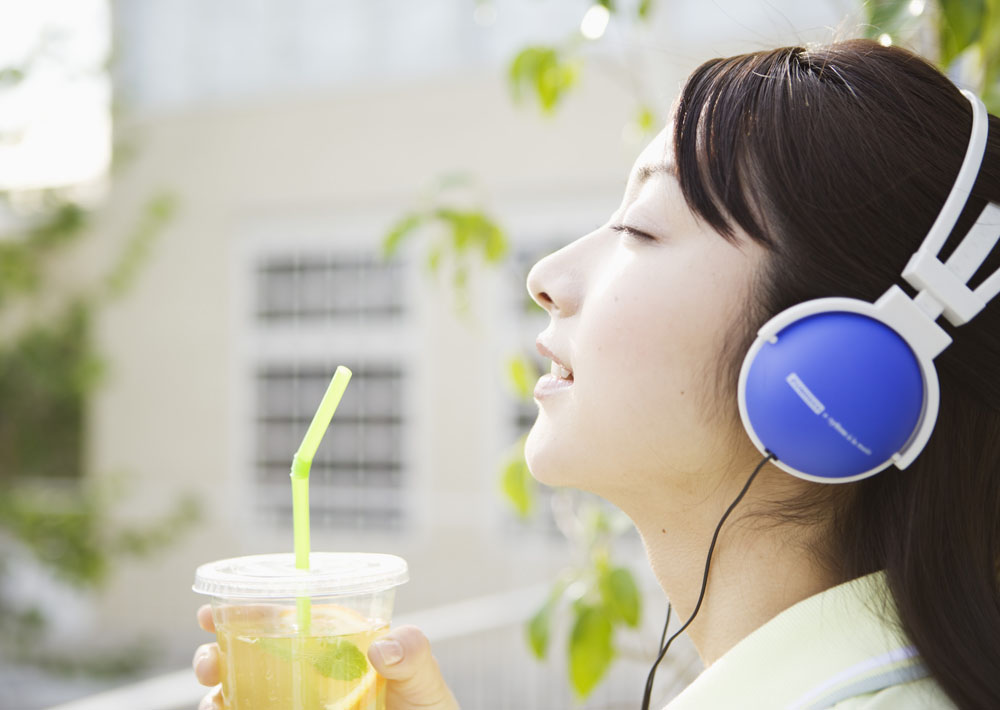

歌曲名：
Long Lost Penpal
演
唱：
Hello Saferide
你的浏览器不支持Audio音频格式！为了能更好的收听这唯美的下午茶，建议更换予以支持的浏览器！
评论(
27
)
收藏(
270
)
分享
下载
登陆
首页
推荐
心情
场景
主播
主播入口
歌曲下载

close
心灵FM 休憩的驿站
午后小憩，学会用音乐来释放心中的压力！
邮箱
密码
注册
忘记密码？
使用其它账号登录
QQ登陆
微博登陆